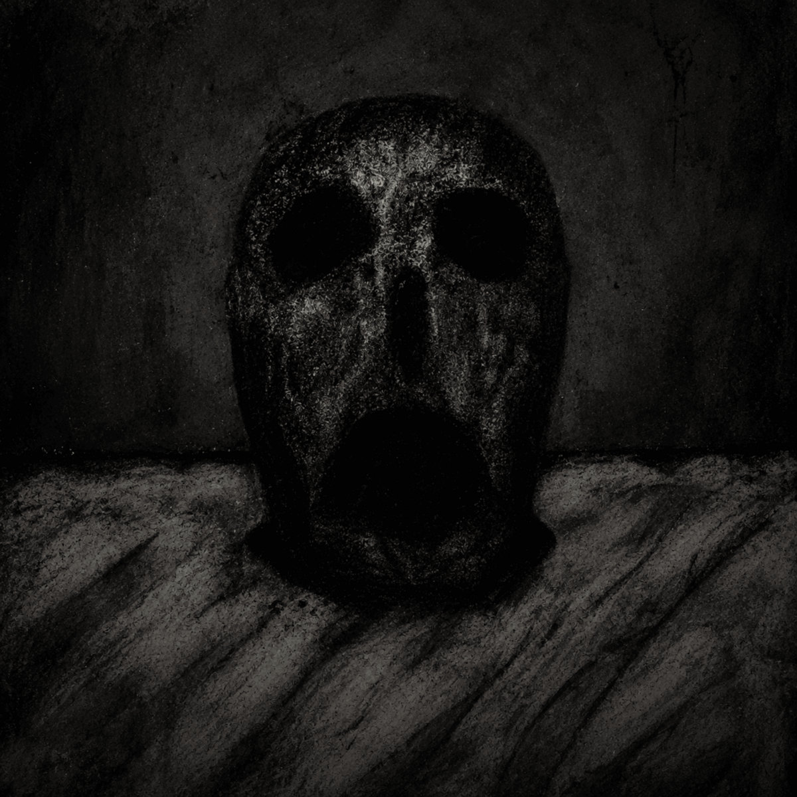

Mexico · Since 2018
Silence
Awaits
When the noise dies,
something remains.

An unfiltered chapter
The Last
Days
2026 / EP / Crystal Soul Records
Isolation. Manipulation. Dissociation.
A descent into the places we cannot leave behind.
Depressive black metal and dark ambient meet in an unfiltered record of emotional disintegration.
The Bandcamp and streaming editions have different track lists.
Every descent leaves a trace
Discography
7 releasesFrom the present to the beginning
Loading the archive…
Nothing here answers that name. Try another title or filter.
Streaming releases update automatically. Bandcamp-only recordings remain in the archive.
A project from Mexico
The shape
of absence.
Silence Awaits is the black metal, DSBM and dark ambient project of Alejandro Emmanuel Arroyo Vargas.
Its music moves between distorted guitars, raw vocals, haunted piano and the cinematic spaces of dark ambient. Death, paranormal presence and psychological distress run through a catalogue that refuses to stay inside one form.
From the atmospheric origins of The Sighting to the raw recordings of Feral Nightmares and the depressive black metal of Human Dissection and The Last Days, each release opens a different door into the same darkness.
Explore the Metal Archives profilePress · Music · Inquiries